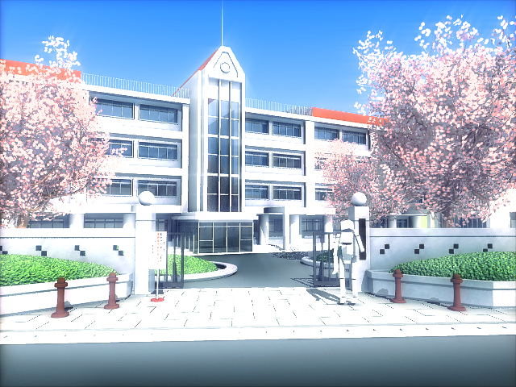

ここ最近大学入試に関しての記事が多くなっていますが、今回もまたしてもソレ関連の内容です。
というのも、入試改革に関連して、大学自体の位置づけも見直していこうという動きがあります。
これまでの日本の大学はよい言い方をすれば「理想に燃えて」、悪く言えば「現実が見えていない」授業を展開してきたところがありました。近年、少子化により生徒数はどんどん減っているため、一部の大学は定員割れに苦しむまでになりました。人が集まらないとなると、従来であれば入学を断っていた、つまり受験で不合格にしていた生徒を合格にせざるを得ません。その結果、大学レベルの授業を受ける土台となる学力が著しく不足した生徒も当たり前のように大学生になれるようになったわけです。
すると、必然的に生じるのが「授業の崩壊」です。英語の授業で中学レベルの内容を扱っている大学の授業プリントがインターネットに面白半分でアップされていましたが、これは氷山の一角に過ぎません。英語の場合、大学で学ぶ科目の中では際だって実用性が高いものですから、大学側も「現実を見て」内容を易化させたのでしょうが、問題は「それ以外」の科目です。大学一年生といえば、専門科目に入る前に一般教養を学ぶ、いわゆる「パンキョウ」の授業が主になります。しかし、専門科目であるからといって簡単なわけでは全くありません。内容自体は概論に過ぎなくとも、高校に比べて授業は格段に不親切になります。分からない語句や概念は自分で調べるのが当たり前。必要な文献は、教授から示されたものを自分で読んでおくのが当たり前。高校であれば必ず設定されていた演習授業もなし。テストは字数自由のオール記述。高校まで手取り足取り教えてもらうことに慣れていた生徒たちにとって、この不親切さは馬鹿になりません。偏差値が70近い大学であっても生徒たちは戸惑うのですから、それよりも下のレベルではなおさらです。
さて、中学レベルの英語の授業を受けている生徒たちが、突如このように不親切で内容も高校レベルよりは明らかに難しい一般科目の授業を受けたらどうなるか。当然ついて行けません。高校であれば先生はついて行けない生徒たちをフォローするために必死で補修を組んだことでしょう。しかし、大学ではそれはありません。放置されて終わりです。では、テストで落第させるのかといえばそれもありません。学校経営上も留年者が続出するのは望ましくないため、とりあえず形だけでも合格させて進級させます。結果として生徒たちは「意味も分からない授業を受け（場合によってはあきらめ）、形だけのテストを受けて」進級することになります。つまり、何も残りません。
このような状況にメスを入れるためにも、一般の大学の授業内容をより「実利」重視のものにし、旧来のかなり専門的、あるいは教養的な内容を行うのは、それがまともに「通じる」生徒たちが通う大学だけに絞ることにしようという案が生まれました。一般にL型大学G型大学と言われるものです。
L型とは「ローカル（Local）型」、G型は「グローバル（Global）型」を指します。
L型G型の意図
いろいろな文章を読むと、近年の産業の高度化に対応するために専門的な職業教育を施す必要性からL型大学を設置する、と説明されています。G型大学はこれまでの大学のカリキュラムを行うものです。L型大学設置の理由はその通りだとは思いますが、文字通りに見るならば、職業教育は専門学校で行うべきでしょう。つまり、L型大学は専門学校に「大学」の名を冠しているに過ぎません。では、現在ある大学はどのように分類されるのでしょうか。まだ明確なことは分かりませんが、国立で言えばいわゆる旧帝国大学や地方上位国立以外のほとんどは程度の差はあれL型に分類されることになりそうです。つまり、日本の大学の9割方はL型に近いものとなるでしょう。
これまでの記事でも触れましたが、学力を基準とした二極化はどんどん進行していきます。「思考力」「表現力」重視の教育というととても耳障りがよく聞こえますが、正直なところ「思考力」や「表現力」の必要性が高い職業はそう多くはありません。つまり、二極化は５０：５０ではなく、１０：９０に分かれるものです。これは二極化というよりもむしろ「エリート」と「その他」の社会と言ったほうがよいかもしれませんね。
そんなわけで、この教育改革の動向は要注意です。今後も情報があり次第記事にしていきたいと思います。
エンライテックの詳細を見る ＞＞